정보처리기사(구) (2016-05-08 기출문제)
1과목: 데이터 베이스
1. 뷰(View)에 대한 설명 중 옳은 내용으로만 나열한 것은?(일부 핸드폰에서 보기 내용이 보이지 않아서 괄호뒤에 다시 표기하여 둡니다.)
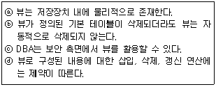
- ⓐ, ⓑ, ⓒ, ⓓ(a, b, c, d)
- ⓐ, ⓒ, ⓓ(a, c, d)
- ⓑ, ⓓ(b, d)
- ⓒ, ⓓ(c, d)
(정답률: 72%)

2. 아래 그림에서 트리의 차수(degree)를 구하면?
- 2
- 3
- 4
- 5
(정답률: 78%)
3. 다음은 무엇에 대한 설명인가?
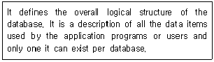
- Internal Schema
- External Schema
- Foreign Schema
- Conceptual Schema
(정답률: 54%)
4. 다음 트리의 터미널 노드 수는?
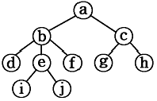
- 2
- 4
- 6
- 10
(정답률: 74%)
5. 스택 알고리즘에서 T 가 스택 포인터이고, m이 스택의 길이일 때, 서브루틴 “AA”가 처리해야 하는 것은?
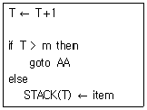
- 오버플로우 처리
- 언더플로우 처리
- 삭제 처리
- 삽입 처리
(정답률: 75%)
6. 해싱에서 동일한 홈 주소로 인하여 충돌이 일어난 레코드들의 집합을 의미하는 것은?
- Synonym
- Collision
- Bucket
- Overflow
(정답률: 78%)
7. 다음 자료에 대하여 “selection sort”를 사용하여 오름차순으로 정렬할 경우 PASS 1의 결과는?
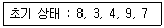
- 3, 4, 8, 7, 9
- 3, 4, 7, 9, 8
- 3, 4, 7, 8, 9
- 3, 8, 4, 9, 7
(정답률: 80%)
8. SQL에서 DELETE 명령에 대한 설명으로 옳지 않은 것은?
- 테이블의 행을 삭제할 때 사용한다.
- WHERE 조건절이 없는 DELETE 명령을 수행하면 DROP TABLE 명령을 수행했을 때와 같은 효과를 얻을 수 있다.
- SQL을 사용 용도에 따라 분류할 경우 DML에 해당한다.
- 기본 사용 형식은 “DELETE FROM 테이블 [WHERE 조건];”이다.
(정답률: 78%)
9. 로킹(Locking) 기법에 대한 설명으로 옳지 않은 것은?
- 로킹의 대상이 되는 객체의 크기를 로킹 단위라고 한다.
- 로킹 단위가 작아지면 병행성 수준이 낮아진다.
- 데이터베이스도 로킹 단위가 될 수 있다.
- 로킹 단위가 커지면 로크 수가 작아 로킹 오버헤드가 감소한다.
(정답률: 79%)
10. 병행제어의 목적으로 옳지 않은 것은?
- 시스템 활용도 최대화
- 데이터베이스 공유도 최대화
- 데이터베이스 일관성 유지
- 사용자에 대한 응답시간 최대화
(정답률: 85%)
11. 일련의 연산 집합으로 데이터베이스의 상태를 변환시키기 위하여 논리적 기능을 수행하는 하나의 작업 단위는?
- 도메인
- 트랜잭션
- 모듈
- 프로시저
(정답률: 82%)
12. STUDENT 테이블에 독일어과 학생 50명, 중국어과 학생 30명, 영어영문학과 학생 50명의 정보가 저장되어 있을 때, 다음 SQL 문의 실행 결과 튜플 수는? (단, DEPT 컬럼은 학과명)
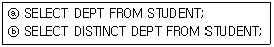
- ⓐ 3 ⓑ 3
- ⓐ 50 ⓑ 3
- ⓐ 130 ⓑ 3
- ⓐ 130 ⓑ 130
(정답률: 79%)
13. SQL언어의 데이터 정의어(DDL)에 해당되지 않는 것은?
- CREATE
- ALTER
- SELECT
- DROP
(정답률: 81%)
14. 관계 데이터베이스 모델에서 차수(Degree)의 의미는?
- 튜플의 수
- 테이블의 수
- 데이터베이스의 수
- 애트리뷰트의 수
(정답률: 68%)
15. 정규화의 목적으로 옳지 않은 것은?
- 어떠한 릴레이션이라도 데이터베이스 내에서 표현 가능하게 만든다.
- 중복을 배제하여 삽입, 삭제, 갱신 이상의 발생을 도모한다.
- 데이터 삽입 시 릴레이션을 재구성할 필요성을 줄인다.
- 효과적인 검색 알고리즘을 생성할 수 있다.
(정답률: 80%)
16. 선형 구조가 아닌 것은?
- 스택
- 트리
- 큐
- 연결 리스트
(정답률: 78%)
17. 중위 표기법(infix)의 수식 (A＋B)*C＋(D＋E)을 후위 표기법(postfix)으로 옳게 표기한 것은?
- AB＋CDE*＋＋
- AB＋C*DE＋＋
- ＋AB*C＋DE＋
- ＋*＋ABC＋DE
(정답률: 71%)
18. 다음은 관계 대수의 수학적 표현식이다. 해당되는 연산은?
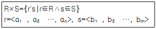
- 합집합
- 교집합
- 차집합
- 카티션 프로덕트
(정답률: 61%)
19. 데이터베이스에서 사용되는 널(NULL)에 대한 설명으로 가장 적절한 것은?
- 널(NULL)은 비어 있다는 뜻으로 기본값 “A”를 가진다.
- 널(NULL)은 Space 값을 나타낸다.
- 널(NULL)은 Zero 값을 나타낸다.
- 널(NULL)은 공백(space)도, 영(zero)도 아닌 부재 정보(missing information)를 나타낸다.
(정답률: 82%)
20. 트랜잭션의 특성 중 다음 설명에 해당하는 것은?
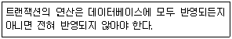
- Durability
- Isolation
- Consistency
- Atomicity
(정답률: 69%)
2과목: 전자 계산기 구조
21. 수치 코드에 대한 설명으로 틀린 것은?
- 수치 코드에는 자리 값을 가지고 있는 가중 코드(weighted code)와 자리 값이 없는 비가중 코드(non-weighted code)로 구분할 수 있다.
- 10진 자기보수화 코드로는 2421 code, excess-3 code 등이 대표적이다.
- 3초과 코드는 8421 코드에 10진수 3을 더한 코드로 코드 내에 하나 이상의 1 이 반드시 포함되어 있어 0과 무신호를 구분하기 위한 코드이다.
- 그레이 코드(gray Code)는 대표적인 가중(weighted) 코드로 인접하나 코드의 비트가 1비트만 변하여 산술 연산에 적합하다.
(정답률: 50%)
22. 채널에 대한 설명으로 옳은 것은?
- 가변 채널은 채널 제어기가 특정한 I/O 장치들에 전용인 전송통로를 지닌 형태를 말하며 구성은 간단하지만 고정 채널에 비해 효율이 낮은 단점을 가지고 있다.
- 버스트 모드는 여러 개의 I/O 장치가 채널의 기능을 공유하여 시분할적으로 데이터를 전송하는 형태로 비교적 저속의 I/O 장치 여러 개를 동시에 동작시키는데 적합하다.
- 멀티플렉서 모드는 하나의 I/O 장치가 데이터 전송을 행하고 있는 동안에는 채널의 기능을 완전히 독점하여 사용하므로 대량의 데이터를 고속으로 전송하는데 적합하다.
- 블록 멀티플렉서 채널은 하나의 데이터 경로를 경유한다는 점과 고속의 입출력 장치를 취급한다는 점에서 바이트 멀티플렉서 채널과 selector 채널을 결합한 형태의 채널이다.
(정답률: 44%)
23. Gray code 1111을 2진 코드로 바꾸면?
- 1010
- 1011
- 0111
- 1001
(정답률: 56%)
24. CPU 내부의 레지스터 중 프로그램 제어와 관계가 있는 것은?
- memory address register
- index register
- accumulator
- status register
(정답률: 56%)
25. 데이터를 전송할 때 입, 출력 버스를 통하여 프로세서와 주변장치 사이에서 이루어지며, 데이터의 전송을 확인하기 위해서 상태 레지스터를 사용하는 전송 모드는?
- 프로그램된 I/O
- 인터럽트에 의한 I/O
- 직접메모리접근(DMA)
- 간접메모리접근(IMA)
(정답률: 34%)
26. 명령어의 주소(address)부를 유효주소로 이용하는 방법은?
- 상대 주소
- 즉시 주소
- 절대 주소
- 직접 주소
(정답률: 52%)
27. 다음 Half-Adder의 진리표를 참조하여 캐리(C)와 합(S)을 구한 결과가 옳은 것은?
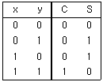
- S=x⊕y, C=xy
- S=xy＋xy, C=xy
- S=x＋y, C=xy
- S=xy＋y, C=xy
(정답률: 63%)
28. 프로그램 처리 중 명령의 요청에 의해 발생하는 대표적인 인터럽트는?
- 기계착오 인터럽트
- 정전
- SVC 인터럽트
- 프로그램 인터럽트
(정답률: 44%)
29. 데이터 입출력 전송이 CPU를 통하지 않고 직접 주기억 장치와 주변장치 사이에서 수행되는 방식은?
- Bus
- DMA
- Cache
- Interleaving
(정답률: 60%)
30. 채널 명령어의 구성 요소가 아닌 것은?
- data address
- flag
- operation code
- I/O device 처리 속도
(정답률: 67%)
31. RAID-5는 RAID-4의 어떤 문제점을 보완하기 위하여 개발되었는가?
- 병렬 액세스의 불가능
- 긴 쓰기 동작 시간
- 패리티 디스크의 액세스 집중
- 많은 수의 검사 디스크 사용
(정답률: 46%)
32. 논리회로를 바르게 표시한 논리식은?
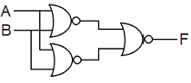
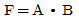
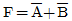
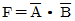
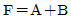
(정답률: 41%)
33. 버스 중재에 있어서 소프트웨어 폴링 방식에 대한 설명으로 틀린 것은?
- 비교적 큰 정보를 교환하는 시스템에 적합하다.
- 융통성이 있다.
- 반응속도가 느리다.
- 우선순위를 변경하기 어렵다.
(정답률: 45%)
34. 명령어의 기능 중에서 동일한 명령을 반복 실행하거나, 명령의 실행 순서를 변경시키는 기능은?
- 전달기능
- 함수연산기능
- 제어기능
- 입, 출력기능
(정답률: 67%)
35. 다음 그림과 같이 A, B 2개의 레지스터에 있는 자료에 대하여 ALU가 OR 연산을 행할 때 출력 레지스터 C의 내용은?
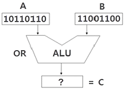
- 11101110
- 11111110
- 10000000
- 10110110
(정답률: 67%)
36. DRAM에 관한 설명으로 옳지 않은 것은?
- SRAM에 비해 기억 용량이 크다.
- 쌍안정 논리 회로의 성질을 응용한다.
- 주기억 장치 구성에 사용된다.
- SRAM에 비해 속도가 느리다.
(정답률: 50%)
37. 다중처리기에 대한 설명으로 틀린 것은?
- 다중처리기는 강결합 시스템으로 2개 이상의 프로세서를 포함한다.
- 다중처리기는 기억장치와 입출력 채널, 주변 장치들을 공유한다.
- 다중처리기는 다수의 복합 운영체제에 의해 제어된다.
- 프로세서들 간의 통신은 공유 기억장치를 통해서 이루어진다.
(정답률: 54%)
38. 분기명령어가 저장되어 있는 기억장치 위치의 주소가 256AH이고, 명령어에 지정된 변위 값이 –75H인 경우 분기되는 주소의 위치는? (단, 분기 명령어 길이는 3바이트이고 상대 주소모드를 사용한다고 가정한다.)
- 24F2H 번지
- 24F5H 번지
- 24F8H 번지
- 256DH 번지
(정답률: 45%)
39. 인터럽트 작동 순서가 올바른 것은?
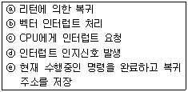
- ⓒⓔⓓⓑⓐ
- ⓓⓒⓔⓑⓐ
- ⓔⓑⓒⓐⓓ
- ⓐⓒⓓⓔⓑ
(정답률: 30%)
40. 64Kbyte인 주소 공간(address space)과 4Kbyte인 기억 공간(memory space)을 가진 컴퓨터의 경우 한 페이지(page)가 512byte로 구성되었다면 페이지와 블록 수는 각각 얼마인가?
- 16페이지, 12블록
- 128페이지, 8블록
- 256페이지, 16블록
- 64페이지, 4블록
(정답률: 51%)
3과목: 운영체제
41. Working set W(t,w)는 t-w 시간부터 t 까지 참조된 page들의 집합을 말한다. 그 시간에 참조된 페이지가 {2, 3, 5, 5, 6, 3, 7}이라면 working set은?
- {3, 5}
- {2, 6, 7}
- {2, 3, 5, 6, 7}
- {2, 7}
(정답률: 66%)
42. 디렉토리 구조 중 각각의 사용자에 대한 MFD와 각 사용자별로 만들어지는 UFD로 구성되며, MFD는 각 사용자의 이름이나 계정 번호 및 UFD를 가리키는 포인터를 갖고 있으며, UFD는 오직 한 사용자가 갖고 있는 파일들에 대한 파일 정보만 갖고 있는 것은?
- 트리 디렉토리 구조
- 일반적인 그래프 디렉토리 구조
- 2단계 디렉토리 구조
- 비순환 그래프 디렉토리 구조
(정답률: 58%)
43. 시스템 소프트웨어의 하나인 로더(Loader)의 기능에 해당하지 않는 것은?
- Allocation
- Linking
- Translation
- Relocation
(정답률: 54%)
44. 고가의 자원은 최적의 이용을 위해 집중적인 관리를 필요로 한다. 주기억장치의 효율적인 이용과 관리를 위한 OS에서의 기억장치 관리기법이 아닌 것은?
- Fetch strategy
- Placement strategy
- Cycle strategy
- Replacement strategy
(정답률: 38%)
45. UNIX에서 I-node는 한 파일이나 디렉토리에 관한 모든 정보를 포함하고 있는데, 이에 해당하지 않는 것은?
- 파일이 가장 처음 변경된 시간 및 파일의 타입
- 파일 소유자의 사용자 번호
- 파일이 만들어진 시간
- 데이터가 담긴 블록의 주소
(정답률: 56%)
46. RR(Round-Robin) 스케줄링에 대한 설명으로 틀린 것은?
- “(대기시간＋서비스시간)/서비스시간”의 계산으로 우선순위를 처리한다.
- 시간 할당이 작아지면 프로세스 문맥 교환이 자주 일어난다.
- Time Sharing System을 위해 고안된 방식이다.
- 시간 할당이 커지면 FCFS 스케줄링과 같은 효과를 얻을 수 있다.
(정답률: 65%)
47. 다중 프로그래밍 시스템에서 OS에 의해 CPU가 할당되는 프로세스를 변경하기 위한 목적으로 현재 CPU를 사용하여 실행되고 있는 프로세스의 상태 정보를 저장하고 제어 권한을 ISR에게 넘기는 작업을 무엇이라 하는가?
- Context Switching
- Monitor
- Mutual Exclusion
- Semaphore
(정답률: 57%)
48. 운영체제의 일반적인 역할이 아닌 것은?
- 사용자들 간의 하드웨어의 공동 사용
- 자원의 효과적인 운영을 위한 스케줄링
- 입/출력에 대한 보조역할
- 실행 가능한 목적(object) 프로그램 생성
(정답률: 58%)
49. 분산 처리 시스템의 설명으로 가장 적합하지 않은 것은?
- 신뢰도 향상
- 자원 공유
- 연산 속도 향상
- 보안성 향상
(정답률: 73%)
50. 현재 헤드의 위치가 50에 있고, 요청 대기열의 순서가 다음과 같을 경우, C-SCAN 스케줄링 알고리즘에 의한 헤드의 총 이동 거리는 얼마인가? (단, 현재 헤드의 이동 방향은 안쪽이며, 안쪽의 위치는 0으로 가정한다.)
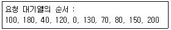
- 790
- 380
- 370
- 250
(정답률: 37%)
51. UNIX의 특징으로 옳은 내용 모두를 나열한 것은?
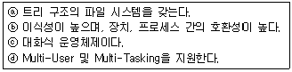
- ⓐ, ⓒ
- ⓐ, ⓑ, ⓒ
- ⓐ, ⓒ, ⓓ
- ⓐ, ⓑ, ⓒ, ⓓ
(정답률: 74%)
52. 운영체제의 목적으로 가장 거리가 먼 것은?
- 사용자 인터페이스 제공
- 주변 장치 관리
- 데이터의 압축 및 복원
- 신뢰성 향상
(정답률: 65%)
53. 운영체제를 수행 기능에 따라 분류할 경우 제어 프로그램에 해당하지 않는 것은?
- 서비스 프로그램
- 감시 프로그램
- 데이터 관리 프로그램
- 작업 제어 프로그램
(정답률: 62%)
54. 분산 운영체제 중 다음의 특징을 갖는 구조는?
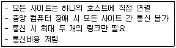
- Ring Connection
- Multi Access Bus
- Hierarchy
- STAR
(정답률: 67%)
55. 교착상태(Deadlock)의 회복 기법에 대한 설명으로 가장 옳지 않은 것은?
- 교착상태에 있는 모든 프로세스를 중지시킨다.
- 교착상태가 없어질 때까지 교착상태에 포함된 자원을 하나씩 비선점 시킨다.
- 교착상태가 없어질 때까지 교착상태에 포함된 프로세스를 하나씩 종료시킨다.
- 교착상태 회복 기법은 시스템 내에 존재하는 교착상태를 제거하기 위하여 사용된다.
(정답률: 45%)
56. 파일 손상을 막기 위한 파일 보호 기법으로 가장 적합하지 않은 것은?
- 파일 명명(File Naming)
- 접근 제어(Access control)
- 암호화(Password/Cryptography)
- 복구(Recovery)
(정답률: 54%)
57. 페이지 기억장치 할당기법에서, 한 페이지의 크기가 512바이트이고 페이지 번호는 0부터 시작한다면, 논리적인 주소 1224번지는 어디로 변환되는가?
- 페이지 1, 변위 200
- 페이지 200, 변위 1
- 페이지 2, 변위 200
- 페이지 200, 변위 2
(정답률: 55%)
58. 다음은 UNIX 명령어 중 permission 변경을 위한 “chmod”의 실행 예이다. “chmod” 명령어를 실행한 후 “ls -l” 명령을 사용하여 결과를 확인하고자 할 때 (Ⓐ) 부분에 출력될 결과로 가장 옳은 것은?
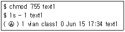
- -rwxr-xr-x
- -rwxrwxrwx
- -r--rwxrwx
- -rw-r-xr-x
(정답률: 53%)
59. 보안의 메커니즘 중 데이터를 송수신한 자가 송수신 사실을 부인할 수 없도록 송수신 증거를 제공하는 것은?
- Authentication
- Encryption
- Non-repudiation
- Decryption
(정답률: 46%)
60. 교착상태의 해결 방법 중 점유 및 대기조건 방지, 비선점 조건 방지, 환형 대기조건 방지와 가장 밀접한 관계가 있는 것은?
- Prevention
- Avoidance
- Detection
- Recovery
(정답률: 66%)
4과목: 소프트웨어 공학
61. Data Dictionary에서 자료의 연결을 나타내는 기호는?
- =
- ( )
- ＋
- { }
(정답률: 68%)
62. 소프트웨어 재공학 활동 중 원시 코드를 분석하여 소프트웨어 관계를 파악하고 기존 시스템의 설계 정보를 재발견하고 다시 제작하는 작업은?
- Analysis
- Reverse Engineering
- Restructuring
- Migration
(정답률: 61%)
63. 객체지향 개발 과정에 대한 설명으로 가장 거리가 먼 것은?
- 분석 단계에서는 객체의 이름과 상태, 행위들을 개념적으로 파악한다.
- 설계 단계에서는 객체를 속성과 연산으로 정의하고 접근 방법을 구체화한다.
- 구현 단계에서는 클래스를 절차적 프로그래밍 언어로 기술한다.
- 테스트 단계에서는 클래스 단위 테스트와 시스템 테스트를 진행한다.
(정답률: 61%)
64. 결합도(Coupling)에 대한 설명으로 틀린 것은?
- 데이터 결합도(Data Coupling)는 두 모듈이 매개변수로 자료를 전달할 때 자료구조 형태로 전달되어 이용될 때 데이터가 결합되어 있다고 한다.
- 내용 결합도(Content Coupling)는 하나의 모듈이 직접적으로 다른 모듈의 내용을 참조할 때 두 모듈은 내용적으로 결합되어 있다고 한다.
- 공통 결합도(Common Coupling)는 두 모듈이 동일한 전역 데이터를 접근한다면 공통 결합되어 있다고 한다.
- 결합도(Coupling)는 두 모듈간의 상호작용, 또는 의존도 정도를 나타내는 것이다.
(정답률: 41%)
65. 소프트웨어 테스트에서 오류의 80%는 전체 모듈의 20% 내에서 발견된다는 법칙은?
- Brooks의 법칙
- Boehm의 법칙
- Pareto의 법칙
- Jackson의 법칙
(정답률: 54%)
66. Gantt chart에 포함되지 않는 사항은?
- 이정표
- 작업일정
- 작업기간
- 주요 작업경로
(정답률: 61%)
67. 두 명의 개발자가 5개월에 걸쳐 10000 라인의 코드를 개발하였을 때, 월별(person-month) 생산성 측정을 위한 계산 방식으로 가장 적합한 것은?
- 10000 / 2
- 10000 / 5
- (2x10000) / 5
- 10000 / (5x2)
(정답률: 74%)
68. 효과적인 프로젝트 관리를 위한 3P를 옳게 나열한 것은?
- People, Priority, Problem
- People, Problem, Process
- Power, Problem, Process
- Problem, Process, Priority
(정답률: 79%)
69. 객체 지향 기법에서 하나 이상의 유사한 객체들을 묶어서 하나의 공통된 특성을 표현한 것은?
- 메시지
- 클래스
- 추상화
- 메소드
(정답률: 76%)
70. 상향식 통합 검사에 대한 설명으로 가장 옳지 않은 것은?
- 깊이 우선 통합법 또는 넓이 우선 통합법에 따라 스터브(stub)를 실제 모듈로 대치한다.
- 검사를 위해 드라이버를 생성한다.
- 하위 모듈들을 클러스터로 결합한다.
- 하위 모듈에서 상위 모듈 방향으로 통합하면서 검사한다.
(정답률: 55%)
71. Alien Code에 대한 설명으로 옳은 것은?
- 프로그램의 로직이 복잡하여 이해하기 어려운 프로그램을 의미한다.
- 아주 오래되거나 참고 문서 또는 개발자가 없어 유지보수 작업이 어려운 프로그램을 의미한다.
- 오류(Error)가 없어 디버깅 과정이 필요 없는 프로그램을 의미한다.
- 차세대 언어를 사용해 인공지능적인 API를 제공함으로써 사용자가 직접 작성한 프로그램을 의미한다.
(정답률: 74%)
72. 어떤 프로그램을 재공학 기술을 적용하여 보수하고자 할 때 Flow Graph가 사용될 수 있다. 다음의 샘플 프로그램에 대한 Flow Graph가 다음 그림과 같을 때 McCabe 식의 Cyclomatic Complexity를 구하면?
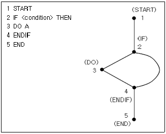
- 1
- 2
- 3
- 4
(정답률: 48%)
73. “Rumbaugh”의 객체 지향 분석 모델링에 해당하지 않는 것은?
- relational
- object
- functional
- dynamic
(정답률: 59%)
74. 객체지향 테스팅 전략 중에서 Unit Testing에 사용되는 것은?
- class testing
- cluster testing
- thread-based testing
- use-based testing
(정답률: 44%)
75. CASE(Computer Aided Software Engineering)에 관한 설명으로 가장 거리가 먼 것은?
- 소프트웨어 공학의 여러 작업들을 자동화하는 도구이다.
- 소프트웨어 수명주기의 어느 부분을 지원하느냐에 따라 Organic, Semi-detached Case, Embedded 모드로 분류할 수 있다.
- 소프트웨어 시스템의 문서화 및 명세화를 위한 그래픽 기능을 제공한다.
- 자료흐름, 비즈니스 프로세스(Business Process) 등의 다이어그램을 쉽게 작성하게 해주는 소프트웨어도 CASE 도구이다.
(정답률: 52%)
76. 소프트웨어 품질 목표 중 주어진 시간동안 주어진 기능을 오류 없이 수행하는 정도를 나타내는 것은?
- 효율성
- 사용 용이성
- 신뢰성
- 이식성
(정답률: 69%)
77. 정보시스템 개발 단계에서 프로그래밍 언어 선택 시 고려할 사항으로 가장 거리가 먼 것은?
- 개발 정보시스템의 특성
- 사용자의 요구사항
- 컴파일러의 가용성
- 컴파일러의 독창성
(정답률: 77%)
78. 브룩스(Brooks) 법칙의 의미를 가장 적합하게 설명한 것은?
- 프로젝트 개발에 참여하는 남성과 여성의 비율은 동일해야 한다.
- 프로젝트 수행 기간의 단축을 위해서는 많은 비용이 투입되어야 한다.
- 프로젝트에 개발자가 많이 참여할수록 프로젝트의 완료 기간은 지연된다.
- 진행 중인 소프트웨어 개발 프로젝트에 새로운 개발 인력을 추가로 투입할 경우 의사소통 채널의 증가로 개발 기간이 더 길어진다.
(정답률: 76%)
79. 세분화된 자료흐름도에서 최하위 단계 프로세스의 처리 절차를 설명한 것은?
- ERD
- Mini-spec
- DD
- STD
(정답률: 51%)
80. Bottom-Up Integration Test의 과정이 옳게 나열된 것은?
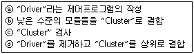
- ⓐ→ⓑ→ⓒ→ⓓ
- ⓑ→ⓐ→ⓒ→ⓓ
- ⓑ→ⓒ→ⓐ→ⓓ
- ⓐ→ⓑ→ⓓ→ⓒ
(정답률: 33%)
5과목: 데이터 통신
81. 다중화 방식 중 타임 슬롯(time slot)을 사용자의 요구에 따라 동적으로 할당하여 데이터를 전송할 수 있는 것은?
- Pulse Code Multiplexing
- Statistical Time Division Multiplexing
- Synchronous Time Division Multiplexing
- Frequency Division Multiplexing
(정답률: 40%)
82. 데이터 전송제어 절차를 순서대로 옳게 나열한 것은?
- 회선접속 → 데이터링크 확립 → 정보 전송 → 회선절단 → 데이터링크 해제
- 데이터링크 확립 → 회선접속 → 정보 전송 → 데이터링크 해제 → 회선절단
- 회선접속 → 데이터링크 확립 → 정보 전송 → 데이터링크 해제 → 회선절단
- 데이터링크 확립 → 회선접속 → 정보 전송 → 회선절단 → 데이터링크 해제
(정답률: 66%)
83. 입력 아날로그 데이터의 최대 주파수가 18kHz인 정보신호를 PCM 시스템에서 전송하고자 할 때, 요구되는 표본화 주파수(kHz)는?
- 9
- 18
- 27
- 36
(정답률: 42%)
84. 중앙에 호스트 컴퓨터가 있고 이를 중심으로 터미널들이 연결되는 네트워크 구성 형태(topology)는?
- 버스형(Bus)
- 링형(Ring)
- 성형(Star)
- 그물형(Mesh)
(정답률: 71%)
85. 데이터 전송 중 한 비트에 에러가 발생했을 경우 이를 수신측에서 정정할 목적으로 사용되는 것은?
- P/F
- HRC
- Checksum
- Hamming code
(정답률: 64%)
86. OSI 7계층 중 통신망을 통하여 패킷을 목적지까지 전달하는 계층은?
- 응용 계층
- 네트워크 계층
- 표현 계층
- 물리 계층
(정답률: 72%)
87. 비 적응 경로배정(routing) 방식인 플러딩(flooding)에 대한 설명으로 옳은 것은?
- 각 노드에 들어오는 패킷을 도착된 링크를 제외한 다른 모든 링크로 복사하여 전송하는 방식이다.
- 네트워크의 모든 근원지, 목적지 노드의 쌍에 대해서 한 경로씩을 미리 결정해 두는 방식이다.
- 네트워크의 변화하는 상태에 따라 반응하여 경로를 결정한다.
- 단순성과 견고성을 띄면서 트래픽의 부하를 훨씬 적게 한 방식으로 노드는 들어온 패킷에 대해 나가는 경로를 무작위로 1개만을 선택한다.
(정답률: 41%)
88. UDP(User Datagram Protocol)에 대한 설명으로 거리가 먼 것은?
- 데이터 전달의 신뢰성을 확보한다.
- 비연결형 프로토콜이다.
- 복구 기능을 제공하지 않는다.
- 수신된 데이터의 순서 재조정 기능을 지원하지 않는다.
(정답률: 50%)
89. 동기전송 방식에서 주로 사용되는 오류검출 방식으로 프레임 단위로 오류검출을 위한 코드를 계산하여 프레임 끝에 FCS를 부착하는 것은?
- CRC
- Hamming Code
- Block Parity
- Parity Bit
(정답률: 50%)
90. 네트워크 전체에서 255.255.255.128 서브넷 마스크를 사용하는 10.0.0.0 네트워크에서 유효하지 않은 서브네트 ID는?
- 10.0.0.0
- 10.0.0.128
- 10.1.1.192
- 10.255.255.0
(정답률: 48%)
91. 데이터 프레임의 정확한 수신 여부를 매번 확인하면서 다음 프레임을 전송해 나가는 ARQ 방식은?
- Go-back-N ARQ
- Selective-Repeat ARQ
- Distribute ARQ
- Stop-and-Wait ARQ
(정답률: 65%)
92. 이동 단말이나 PDA, 소형 무선 단말기 상에서 인터넷을 이용할 수 있도록 해주는 프로토콜의 총칭은?
- ASP
- WAP
- HTTP
- PPP
(정답률: 57%)
93. PCM에서 ISI를 측정하기 위해 eye pattern을 이용하는데 눈을 뜬 상하의 높이는 무엇을 의미하는가?
- 변조도
- 시스템 감도
- 잡음의 여유도
- ISI 간섭 없이 수신파를 sampling 할 수 있는 주기
(정답률: 58%)
94. RIP의 한계를 극복하기 위해 IETF에서 고안한 것으로 네트워크의 변화가 있을 때에만 갱신함으로 대역을 효과적으로 사용할 수 있는 라우팅 프로토콜은?
- BGP
- IGRP
- OSPF
- RTP
(정답률: 51%)
95. 주파수 분할 다중화 방식(FDM)에서 Guard Band가 필요한 이유는?
- 주파수 대역폭을 넓히기 위함이다.
- 신호의 세기를 크게 하기 위함이다.
- 채널 간섭을 막기 위함이다.
- 많은 채널을 좁은 주파수 대역에 쓰기 위함이다.
(정답률: 72%)
96. 데이터 링크제어 프로토콜 중 HDLC의 프레임 형식으로 틀린 것은?
- 8비트 길이의 플래그
- 8비트 또는 16비트의 제어영역
- 가변 길이의 정보영역
- 64비트의 FCS
(정답률: 51%)
97. OSI-7 layer의 2번째 계층인 data link layer에서 사용되는 기본 데이터 단위는?
- 비트
- 프레임
- 패킷
- 메시지
(정답률: 60%)
98. 다음이 설명하고 있는 것은?
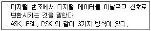
- Carrier
- Manchester
- Keying
- Converter
(정답률: 45%)
99. X.25 프로토콜을 구성하는 계층으로 틀린 것은?
- 물리계층
- 링크계층
- 전송계층
- 패킷계층
(정답률: 47%)
100. QPSK(Quadrature PSK) 변조방식에서 변화되는 위상차는?
- 45°
- 90°
- 180°
- 위상차 없음
(정답률: 63%)
- 뷰(View)는 사용자와 상호작용할 수 있는 기능을 제공한다. (ⓑ, b)
- 뷰(View)는 다른 뷰(View)나 레이아웃(Layout)에 포함될 수 있다. (ⓒ, c)
- 뷰(View)는 XML 레이아웃 파일에서 정의할 수 있다. (ⓓ, d)
따라서, 정답은 "ⓒ, ⓓ(c, d)"이다.